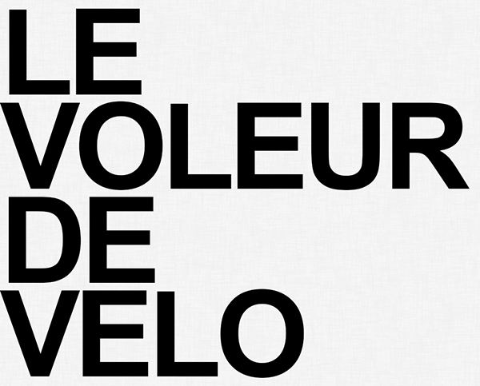

- Formation : Indus. Graphiques
photoshop, in-design, illustrator
réflexion, collage, prototype
- Langues vivantes : Anglais / Espagnol
- Permis B
- Print graphisme p.a.o : création sur mesure d'outils originaux : catalogue, affiche, merchandising, charte graphique - Imagination, conceptualisation, cible.
- Offset et numérique : préparation, vérification de fichiers Print en fonction des contraintes de support et de destination - Validation de bons à tirer, délais, suivi de commande.
- Sérigraphie textile et papier : préparation de cadres, retouche, calage, impression manuelle, lavage - Travail de laboratoire.
- Affiche :


- Encre :

- Moniteur imprimeur massicotier : CAT l'Espérance, 75
- Archiviste numérique : Cinétévé, 75
- Sérigraphe textile et papier indépendant : Absv, 75
- Graphiste : Association Taf, 34
- Dessinateur projeteur : Architecture Chantier, 51
- Stage de sérigraphie : Atelier Del Arco, 75
- Affichiste : Association Taf, 34
- Graphiste renfort : Dialektik Records, 44
- Opérateur p.a.o : Imprimerie Agipa, 51
- Opérateur p.a.o : Imprimerie Champenoise, 51
- Opérateur p.a.o : Le réveil de la Marne, 51
- Opérateur p.a.o : Imprimerie Billet, 51
Sound-designer, musicien, bassiste, arrangeur
Centres d'intérêt : musique, cinéma, écriture
Ⓒ ch-batalla - 2021